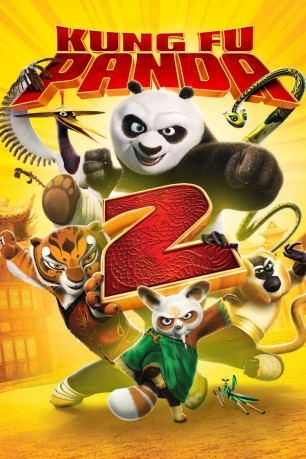

#641 Kung Fu Panda 2
Auszeichnungen: für 1 Oscars nominiert
 
 IMDB-Wertung: 7.2 / 10
IMDB-Wertung: 7.2 / 10  Metascore: 67
Metascore: 67 
Der geheimnissvolle Schurke Lord Shen hat es auf den knuffigen Bären abgesehen. Als ob das nicht schlimm genug wäre, verfügt der Bösewicht über eine Geheimwaffe. Es geht um nichts weniger, als das Kung Fu selbst vor dem mächtigen Feind zu beschützen. Zu diesem Zweck sind die Fähigkeiten aller “furiosen Fünf” gefragt: Tigress, Crane, Monkey, Mantis und Viper, alle sind wieder dabei, um das gefährliche Abenteuer in China zu bestehen. Allerdings muss sich Kung Fu Panda Po erst einmal seiner mysteriösen Vergangenheit stellen.
Jahr: 2011
Dauer: 91 Minuten
FSK: 6
Land: USA Studio: Paramount PicturesTonspuren: DD5.1 - ,
Untertitel: Deutsch,
Auflösung: 1080p (1920x816) Größe: 4587 MB
Genre: Animation/Trick, Action, Abenteuer, Komödie, Familie, Fantasy
Regisseur: Jennifer Yuh Nelson
Drehbuch: Jonathan Aibel, Glenn Berger
Soundtrack: John Powell, Hans Zimmer
Darsteller:
Datei: X:\Kinder Collections\Kung Fu Panda\Kung Fu Panda 2 (2011, FSK6, 1920x816).mkv seit 12.03.2015
Festplatte: Kinder-Filme+Trick
 Es gibt insgesamt 10 Filme in der Gruppe 'Kinder Collections\Kung Fu Panda'
Es gibt insgesamt 10 Filme in der Gruppe 'Kinder Collections\Kung Fu Panda'